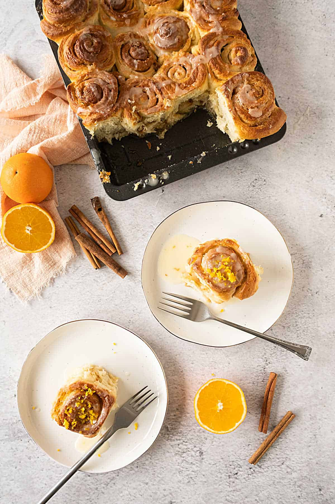

Orange Cinnamon Rolls

Sweet, pillowy, ultra soft Orange Cinnamon Rolls made with fresh orange juice.
These orange cinnamon rolls are fluffy, soft, and sweet. Covered in a sticky orange cream cheese glaze, they are an amazing breakfast or brunch treat that make your entire house smell incredible!
Ingredients
Dough:
- ¾ cup warm whole milk (110 degrees F (43 degrees C))
- 1 (.25 ounce) package active dry yeast
- 1 large egg, room temperature
- 1 large egg yolk, room temperature
- ½ cup unsalted butter, softened
- 2 tablespoons honey
- 1 ½ teaspoons freshly grated orange zest
- ¼ cup freshly squeezed orange juice
- 3 ½ cups all-purpose flour, divided, or more as needed
- 1 ½ teaspoons kosher salt
- cooking spray
Filling:
- ½ cup unsalted butter, softened
- ½ cup light brown sugar
- 2 teaspoons ground cinnamon
- 1 ½ teaspoons freshly grated orange zest
Frosting
- 4 ounces cream cheese, softened
- 1 cup powdered sugar
- 1 tablespoon freshly grated orange zest
- 1 tablespoon freshly squeezed orange juice
- ¼ teaspoon kosher salt
Steps
- Pour warmed milk into the bowl of a stand mixer fitted with a paddle attachment for the dough.
- Add egg and egg yolk, butter, honey, orange zest, and orange juice to the yeast mixture.
- Gather dough into a ball and transfer to a large greased bowl
- To make the filling: Combine butter, brown sugar, cinnamon, and orange zest in a bowl.
- Grease a 13x9-inch baking dish; set aside
- Roll the dough away from you to create a log, and pinch seam to seal.
- Cut dough log into 12 equal rolls (about 1 ½ inches wide).
- Preheat the oven to 375 degrees F (190 degrees C).
- Bake rolls in the preheated oven until golden brown, 22 to 25 minutes.
- While rolls are baking, prepare the frosting.
- Remove rolls from oven and transfer to a wire rack.
Back to main page